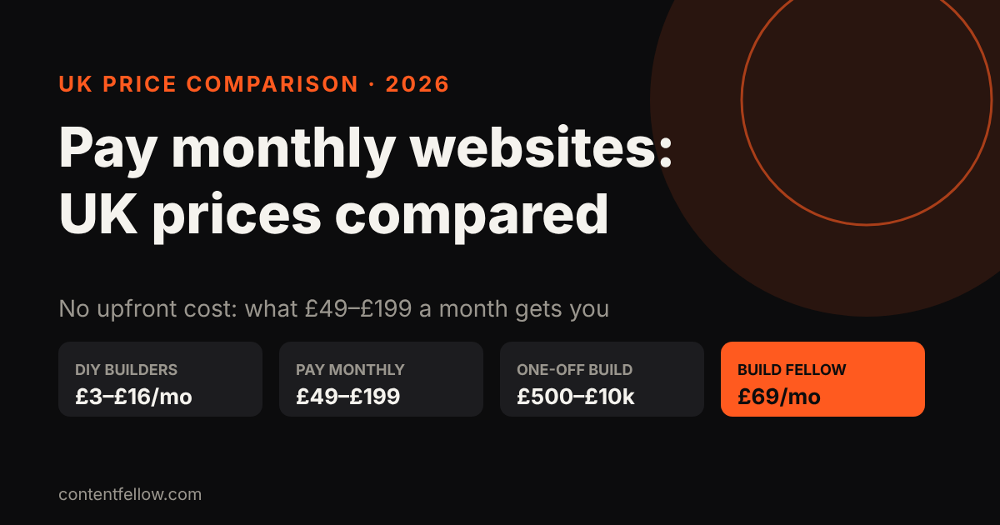
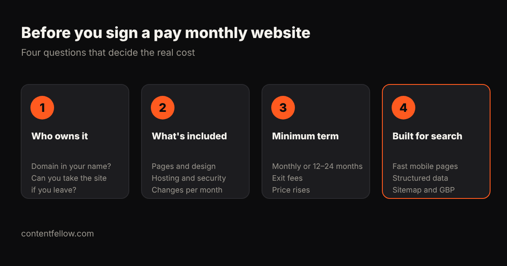

Pay Monthly Websites UK: 2026 Price Comparison for Small Businesses
Quick answer: UK pay monthly websites typically cost £49 to £199 a month with no upfront fee, usually including design, hosting and updates. DIY website builders cost about £3–£16 a month, and a one-off build costs £500–£10,000 plus running costs. The most important difference between plans isn't price but ownership and minimum term: check whether you keep the domain and site if you leave. (Prices as published by each provider on 16 October 2026. Check their sites for current offers.)

Transparency note: ContentFellow wrote this comparison and our Build Fellow is included. We've only listed prices providers publish themselves.
Published UK pay monthly website prices
| Provider / type | Published price | Notes (as published) |
|---|---|---|
| ContentFellow Build Fellow | £69 a month, no upfront fee | Custom site up to 5 pages, hosting, security, updates, 2 change requests a month, free homepage preview |
| Convrtem | From £49 a month | Pay monthly websites, no upfront costs |
| Opace | £50 a month | Brochure websites for startups and small businesses |
| StoreBuilder (guide) | Typically £49–£199 a month | Typical UK pay monthly range |
| Atomic | £100 a month + VAT | Design, build, hosting and maintenance |
| DIY builders (Wix, Squarespace, Hostinger) | About £3–£16 a month | You build and maintain it yourself |
For one-off build prices and three-year totals, see how much a small business website costs in the UK.
Four questions before you sign

- Who owns it? Is the domain registered in your name? If you leave, can you take the design and content, or does the site switch off?
- What's included? Number of pages, custom design or template, hosting, SSL, security, backups, and how many changes a month.
- What's the minimum term? Monthly, or 12–24 months? Are there exit fees or annual price rises?
- Is it built for search? Fast mobile pages, structured data, a sitemap and clear service pages help you show up on Google and in AI answers like ChatGPT. See how to get recommended by ChatGPT.
Pay monthly vs buying outright
| Pay monthly | Buy outright | |
|---|---|---|
| Upfront cost | £0 | £500–£10,000 |
| Monthly cost | £49–£199 | £5–£150 for hosting and care |
| Updates and security | Usually included | Extra, or your job |
| Best for | Cash flow, wanting it handled | Bigger budgets, wanting full control |
Over three years, a £69 plan totals about £2,484. A £1,500 freelancer build plus £20 a month care totals about £2,220. They're close; the difference is whether someone is keeping the site updated, secure and improving.
How the Build Fellow compares
The Build Fellow is £69 a month: a custom website of up to five pages, with hosting, security and updates included, plus two change requests every month. There's no upfront fee, billing is monthly, and you can get a free homepage preview within 3 working days before paying anything.
Get your free homepage preview →
Free AI visibility check
We ask ChatGPT and Gemini 10 questions your customers ask, and email you who they recommend instead of you, plus the 3 fixes that matter most. Free, within 2 working days.
Frequently asked questions
How much is a pay monthly website in the UK?
Most UK pay monthly websites cost £49 to £199 a month with no upfront fee. Prices usually include design, hosting and updates.
Are pay monthly websites worth it?
They suit small businesses that want a professional site without a large upfront bill and want updates handled. Check ownership and minimum term first.
Do I own a pay monthly website?
It depends on the provider. Always ask whether the domain is in your name and what happens to the site and content if you cancel.
What's the cheapest way to get a website in the UK?
A DIY builder at about £3–£16 a month, if you have the time to build and maintain it yourself.
Can I see the website before paying?
Some providers offer previews. The ContentFellow Build Fellow includes a free homepage preview within 3 working days.